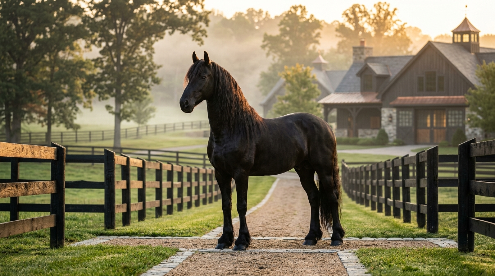
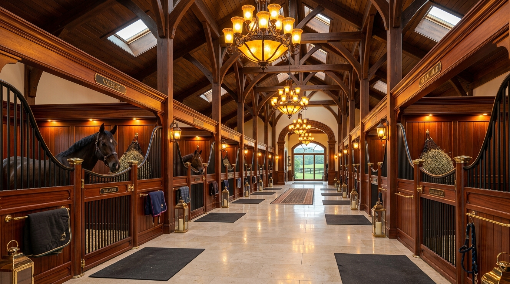

Un Legado Forjado en
Sangre Real
Durante más de tres décadas, Equine Heritage ha cultivado un estándar de excelencia intransigente, criando campeones que definen la cúspide del rendimiento deportivo, la elegancia morfológica y la pureza genealógica.

De un Solo Semental a un Linaje Mundial
"No nos propusimos simplemente criar caballos; nos propusimos preservar una obra de arte viviente. La calidad requiere paciencia, observación y un respeto absoluto por la nobleza del animal."
— Familia Fundadora Mendoza-BorbónEn el otoño de 1995, Equine Heritage nació con una filosofía inmutable: adquirir ejemplares fundacionales de insuperable estampa y nobleza para devolver a la cría española el rigor genealógico y el temperamento de los caballos reales.
Nuestra metodología fusiona trescientos años de tradición ecuestre clásica con la biotecnología reproductiva moderna. Cada potro nacido en nuestras praderas es el resultado de un estudio cromosómico minucioso y un programa etológico que potencia su inteligencia natural.
Tres Décadas de Distinción
Los momentos determinantes que han forjado el prestigio internacional de nuestra ganadería.
La Fundación & Primer Semental
Adquisición de la finca histórica de 500 hectáreas en la dehesa y la llegada de 'Aurelius', nuestro semental cartujano fundador que definió el temperamento noble de la yeguada.
Primer Gran Campeón Internacional
El ejemplar 'Noble Ascendant' obtiene los máximos galardones de Morfología y Movimientos en el Salón Internacional del Caballo (SICAB), consagrando el linaje a nivel europeo.
Laboratorio Biotecnológico de Vanguardia
Inauguración de nuestro centro de criopreservación seminal y biometría genética, permitiendo la exportación de dosis a los cinco continentes bajo los estándares sanitarios más exigentes.
Academia Ecuestre Internacional & Turismo
Apertura de los programas de formación residencial con maestros olímpicos y el programa de turismo ecuestre familiar, acercando la magia del caballo a las nuevas generaciones.
Los Pilares de Nuestro Legado
Los valores éticos y técnicos que guían cada decisión en el criadero.
Integridad Ética
Estándares inflexibles en la cría natural, transparencia absoluta en las pruebas de ADN y el compromiso innegociable con el bienestar físico y emocional de cada ejemplar.
Pedigrí Certificado
Curaduría meticulosa de líneas de sangre Cartujanas. Analizamos generaciones de ancestros para producir potros que transmitan la fisonomía y el temperamento de los campeones.
Rendimiento en Pista
La forma sigue a la función. Criamos caballos no solo para admirar su belleza estética, sino por su fuerza muscular, elasticidad, ligereza y agilidad en las pistas de alta competición.
Viva la Tradición en Persona
Le invitamos a conocer las caballerizas históricas, pasear por los pastos de yeguas con potros y dialogar con nuestros maestros sobre genética y cría.